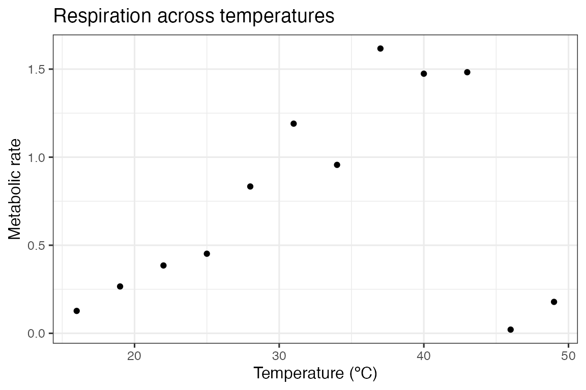
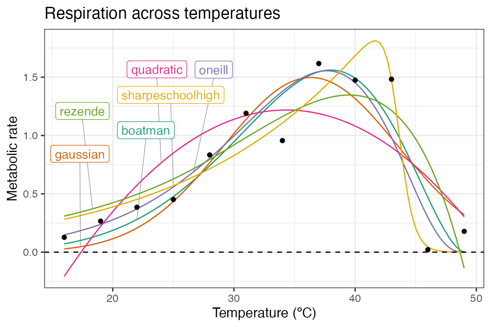
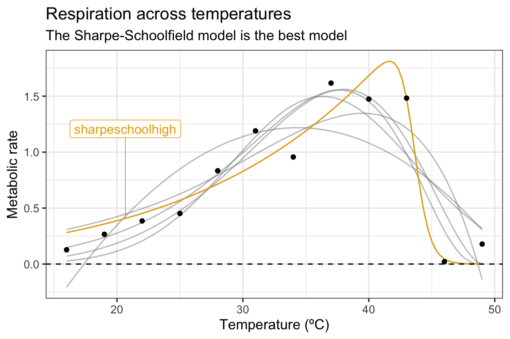
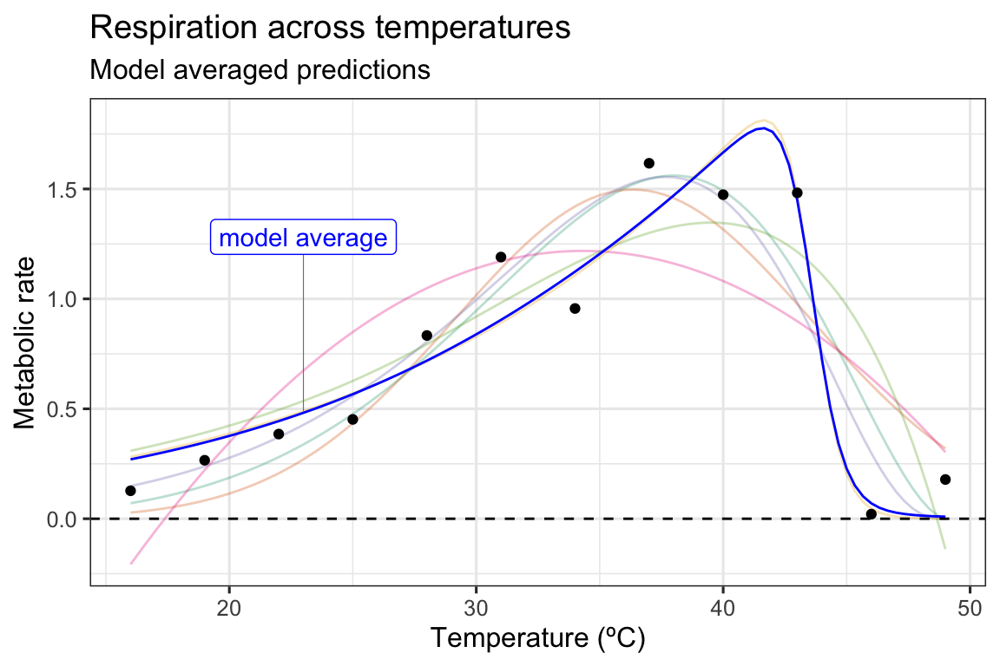

vignettes/model_averaging_selection.Rmd
model_averaging_selection.Rmd
# load packages
library(rTPC)
library(nls.multstart)
library(broom)
library(tidyverse)
library(ggrepel)The general pipeline demonstrates how models can be fitted, parameters extracted, and predictions plotted to single or multiple curves using functions in rTPC, nls_multstart(), and the tidyverse.
Here, we demonstrate how this pipeline can easily be extended to do (1) model selection where the model that best supports the data is chosen or (2) model averaging where multiple models are used to make predictions or estimating extra parameters, usually by weighting each model by how well they fit to the data.
Instead of picking all 24 model formulations to demonstrate these
approaches, we picked 5 models with different shaped curves (see
vignette('fit_many_models')):
boatman_2017(), gaussian_1987(),
oneill_1972(), quadratic_2008(),
rezende_2019(), and
sharpeschoolhigh_1981()
First, we fit each of these model formulations to a single curve from the example dataset rTPC - a dataset of 60 TPCs of respiration and photosynthesis of the aquatic algae, Chlorella vulgaris. We can plot the data using ggplot2.
# load in data
data("chlorella_tpc")
# keep just a single curve
d <- filter(chlorella_tpc, curve_id == 1)
# show the data
ggplot(d, aes(temp, rate)) +
geom_point() +
theme_bw(base_size = 12) +
labs(x = 'Temperature (ºC)',
y = 'Metabolic rate',
title = 'Respiration across temperatures')
The 5 models are then be fitted using the same approach as in the
vignette('fit_many_models'), using list columns
purrr::map() to fit and store multiple models in a data
frame.
# fit five chosen model formulations in rTPC
d_fits <- nest(d, data = c(temp, rate)) %>%
mutate(boatman = map(data, ~nls_multstart(rate~boatman_2017(temp = temp, rmax, tmin, tmax, a,b),
data = .x,
iter = c(4,4,4,4,4),
start_lower = get_start_vals(.x$temp, .x$rate, model_name = 'boatman_2017') - 10,
start_upper = get_start_vals(.x$temp, .x$rate, model_name = 'boatman_2017') + 10,
lower = get_lower_lims(.x$temp, .x$rate, model_name = 'boatman_2017'),
upper = get_upper_lims(.x$temp, .x$rate, model_name = 'boatman_2017'),
supp_errors = 'Y',
convergence_count = FALSE)),
gaussian = map(data, ~nls_multstart(rate~gaussian_1987(temp = temp, rmax, topt, a),
data = .x,
iter = c(4,4,4),
start_lower = get_start_vals(.x$temp, .x$rate, model_name = 'gaussian_1987') - 10,
start_upper = get_start_vals(.x$temp, .x$rate, model_name = 'gaussian_1987') + 10,
lower = get_lower_lims(.x$temp, .x$rate, model_name = 'gaussian_1987'),
upper = get_upper_lims(.x$temp, .x$rate, model_name = 'gaussian_1987'),
supp_errors = 'Y',
convergence_count = FALSE)),
oneill = map(data, ~nls_multstart(rate~oneill_1972(temp = temp, rmax, ctmax, topt, q10),
data = .x,
iter = c(4,4,4,4),
start_lower = get_start_vals(.x$temp, .x$rate, model_name = 'oneill_1972') - 10,
start_upper = get_start_vals(.x$temp, .x$rate, model_name = 'oneill_1972') + 10,
lower = get_lower_lims(.x$temp, .x$rate, model_name = 'oneill_1972'),
upper = get_upper_lims(.x$temp, .x$rate, model_name = 'oneill_1972'),
supp_errors = 'Y',
convergence_count = FALSE)),
quadratic = map(data, ~nls_multstart(rate~quadratic_2008(temp = temp, a, b, c),
data = .x,
iter = c(4,4,4),
start_lower = get_start_vals(.x$temp, .x$rate, model_name = 'quadratic_2008') - 0.5,
start_upper = get_start_vals(.x$temp, .x$rate, model_name = 'quadratic_2008') + 0.5,
lower = get_lower_lims(.x$temp, .x$rate, model_name = 'quadratic_2008'),
upper = get_upper_lims(.x$temp, .x$rate, model_name = 'quadratic_2008'),
supp_errors = 'Y',
convergence_count = FALSE)),
rezende = map(data, ~nls_multstart(rate~rezende_2019(temp = temp, q10, a,b,c),
data = .x,
iter = c(4,4,4,4),
start_lower = get_start_vals(.x$temp, .x$rate, model_name = 'rezende_2019') - 10,
start_upper = get_start_vals(.x$temp, .x$rate, model_name = 'rezende_2019') + 10,
lower = get_lower_lims(.x$temp, .x$rate, model_name = 'rezende_2019'),
upper = get_upper_lims(.x$temp, .x$rate, model_name = 'rezende_2019'),
supp_errors = 'Y',
convergence_count = FALSE)),
sharpeschoolhigh = map(data, ~nls_multstart(rate~sharpeschoolhigh_1981(temp = temp, r_tref,e,eh,th, tref = 15),
data = .x,
iter = c(4,4,4,4),
start_lower = get_start_vals(.x$temp, .x$rate, model_name = 'sharpeschoolhigh_1981') - 10,
start_upper = get_start_vals(.x$temp, .x$rate, model_name = 'sharpeschoolhigh_1981') + 10,
lower = get_lower_lims(.x$temp, .x$rate, model_name = 'sharpeschoolhigh_1981'),
upper = get_upper_lims(.x$temp, .x$rate, model_name = 'sharpeschoolhigh_1981'),
supp_errors = 'Y',
convergence_count = FALSE)))The predictions of each model can be estimated using broom::augment(). By stacking the models into long format, this can be done on all models at once. To create a smooth curve fit, the predictions are done on a new temperature vector that has 100 points over the temperature range. The predictions for each model formulation are then visualised in ggplot2.
# stack models
d_stack <- select(d_fits, -data) %>%
pivot_longer(., names_to = 'model_name', values_to = 'fit', boatman:sharpeschoolhigh)
# get predictions using augment
newdata <- tibble(temp = seq(min(d$temp), max(d$temp), length.out = 100))
d_preds <- d_stack %>%
mutate(., preds = map(fit, augment, newdata = newdata)) %>%
select(-fit) %>%
unnest(preds)
# take a random point from each model for labelling
d_labs <- filter(d_preds, temp < 30) %>%
group_by(., model_name) %>%
sample_n(., 1) %>%
ungroup()
# plot
ggplot(d_preds, aes(temp, .fitted)) +
geom_line(aes(col = model_name)) +
geom_label_repel(aes(temp, .fitted, label = model_name, col = model_name), fill = 'white', nudge_y = 0.8, segment.size = 0.2, segment.colour = 'grey50', d_labs) +
geom_point(aes(temp, rate), d) +
theme_bw(base_size = 12) +
theme(legend.position = 'none') +
labs(x = 'Temperature (ºC)',
y = 'Metabolic rate',
title = 'Respiration across temperatures') +
geom_hline(aes(yintercept = 0), linetype = 2) +
scale_color_brewer(type = 'qual', palette = 2)
As can be seen in the above plot, there is some variation in how the different model formulations fit to the data. We can use a information theoretic approach to compare between different models, using measures of relative model fit - such as AIC, BIC, and AICc (AIC correcting for small sample size). AIC and BIC are both returned by broom::glance(), and AICc can be added using MuMIn::AICc()
d_ic <- d_stack %>%
mutate(., info = map(fit, glance),
AICc = map_dbl(fit, MuMIn::AICc)) %>%
select(-fit) %>%
unnest(info) %>%
select(model_name, sigma, AIC, AICc, BIC, df.residual)
d_ic
#> # A tibble: 6 × 6
#> model_name sigma AIC AICc BIC df.residual
#> <chr> <dbl> <dbl> <dbl> <dbl> <int>
#> 1 boatman 0.292 10.0 26.8 12.9 7
#> 2 gaussian 0.327 11.8 17.5 13.7 9
#> 3 oneill 0.266 7.38 17.4 9.81 8
#> 4 quadratic 0.408 17.1 22.8 19.0 9
#> 5 rezende 0.362 14.8 24.8 17.2 8
#> 6 sharpeschoolhigh 0.198 0.350 10.3 2.77 8In this instance, we will use AICc score to compare between models. For a model selection approach, the model with the lowest AICc score is chosen as the model that best supports the data. In this instance, it is the Sharpe-Schoolfield model.
# filter for best model
best_model = filter(d_ic, AICc == min(AICc)) %>% pull(model_name)
best_model
#> [1] "sharpeschoolhigh"
# get colour code
col_best_mod = RColorBrewer::brewer.pal(n = 6, name = "Dark2")[6]
# plot
ggplot(d_preds, aes(temp, .fitted)) +
geom_line(aes(group = model_name), col = 'grey50', alpha = 0.5) +
geom_line(data = filter(d_preds, model_name == best_model), col = col_best_mod) +
geom_label_repel(aes(temp, .fitted, label = model_name), fill = 'white', nudge_y = 0.8, segment.size = 0.2, segment.colour = 'grey50', data = filter(d_labs, model_name == best_model), col = col_best_mod) +
geom_point(aes(temp, rate), d) +
theme_bw(base_size = 12) +
theme(legend.position = 'none') +
labs(x = 'Temperature (ºC)',
y = 'Metabolic rate',
title = 'Respiration across temperatures',
subtitle= 'The Sharpe-Schoolfield model is the best model') +
geom_hline(aes(yintercept = 0), linetype = 2) 
For a model averaging approach, predictions and parameters from the models are averaged. In ecology, this is usually done based on each model’s weighting. The best supported model’s predictions are taken into account more than the least supported. Often the number of models is reduced by setting a cut-off for the difference in the information criterion metric being used. A common approach is to only keep models within \(\Delta 2 AIC\) of the best model.
# get model weights
# filtering on AIC score is hashtagged out in this example
d_ic <- d_ic %>%
# filter(d_ic, aic - min(aic) <= 2) %>%
mutate(., weight = MuMIn::Weights(AICc))
select(d_ic, model_name, weight) %>%
arrange(., desc(weight))
#> # A tibble: 6 × 2
#> model_name weight
#> <chr> <mdl.wght>
#> 1 sharpeschoolhigh 0.9424252668
#> 2 oneill 0.0280192485
#> 3 gaussian 0.0267590335
#> 4 quadratic 0.0018576699
#> 5 rezende 0.0006905432
#> 6 boatman 0.0002482381
# calculate average prediction
ave_preds <- left_join(d_preds, select(d_ic, model_name, weight)) %>%
group_by(temp) %>%
summarise(., .fitted = sum(.fitted*weight)) %>%
ungroup() %>%
mutate(model_name = 'model average')
#> Joining with `by = join_by(model_name)`
# create label for averaged predictions
d_labs <- filter(ave_preds, temp < 30) %>% sample_n(., 1)
# plot these
ggplot(d_preds, aes(temp, .fitted)) +
geom_line(aes(col = model_name), alpha = 0.3) +
geom_line(data = ave_preds, col = 'blue') +
geom_label_repel(aes(label = model_name), fill = 'white', nudge_y = 0.8, segment.size = 0.2, segment.colour = 'grey50', data = d_labs, col = 'blue') +
geom_point(aes(temp, rate), d) +
theme_bw(base_size = 12) +
theme(legend.position = 'none') +
labs(x = 'Temperature (ºC)',
y = 'Metabolic rate',
title = 'Respiration across temperatures',
subtitle= 'Model averaged predictions') +
geom_hline(aes(yintercept = 0), linetype = 2) +
scale_color_brewer(type = 'qual', palette = 2)
In this example, as is obvious from the model weights, the Sharpe-Schoolfield model is overwhelmingly the most supported. This plays out in the plot, with the predictions deviating very little from the predictions based on the Sharpe-Schoolfield model.
Model averaging can also be applied to calculated extra parameters, such as optimum temperature and maximum rate.
# calculate estimated parameters
params <- d_stack %>%
mutate(., params = map(fit, calc_params)) %>%
select(-fit) %>%
unnest(params)
# get averaged parameters based on model weights
ave_params <- left_join(params, select(d_ic, model_name, weight)) %>%
summarise(., across(rmax:skewness, function(x){sum(x*.$weight)})) %>%
mutate(model_name = 'model average')
#> Joining with `by = join_by(model_name)`
# show them
bind_rows(select(params, model_name, rmax:skewness), ave_params) %>%
mutate_if(is.numeric, round, 2)
#> # A tibble: 7 × 12
#> model_name rmax topt ctmin ctmax e eh q10 thermal_safety_margin
#> <chr> <dbl> <dbl> <dbl> <dbl> <dbl> <dbl> <dbl> <dbl>
#> 1 boatman 1.56 38 0 48.1 0.72 1.74 2.48 10.1
#> 2 gaussian 1.5 36.3 18.7 54.0 0.68 1.08 2.37 17.6
#> 3 oneill 1.55 37.7 12.1 47.4 0.72 1.74 2.48 9.69
#> 4 quadratic 1.22 34.3 17.4 51.3 0.68 1.08 2.37 16.9
#> 5 rezende 1.35 39.5 -3.41 48.7 0.72 1.74 2.48 9.14
#> 6 sharpeschoolh… 1.81 41.6 2.54 45.6 0.58 11.5 2.06 3.91
#> 7 model average 1.8 41.4 3.26 45.8 0.59 10.9 2.08 4.47
#> # ℹ 3 more variables: thermal_tolerance <dbl>, breadth <dbl>, skewness <dbl>